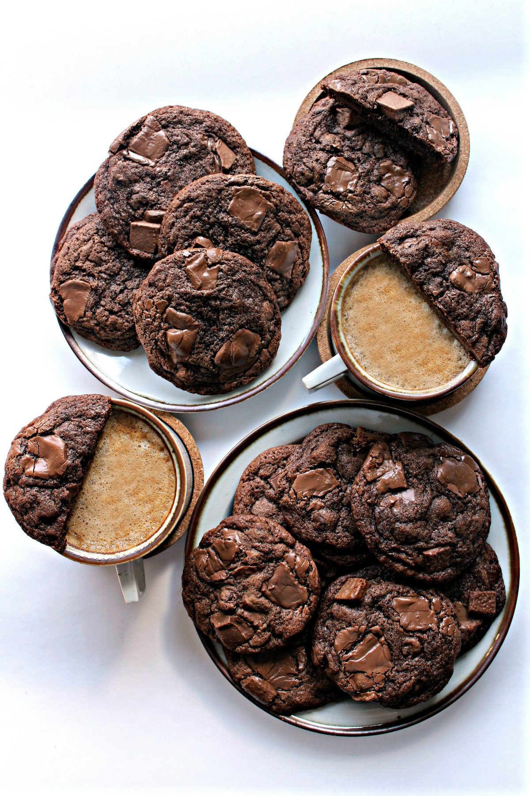

Chocolate Chip Mocha Cookies

Enjoy these cookies at the office to make your work day happy.
The addition of coffee extract does amazing things. It intensifies the chocolate taste and it transforms the overall cookie flavor to mocha.
Ingredients
- 2 ¼ cups all-purpose flour
- ¼ cup cocoa powder
- 1 teaspoon baking soda
- ½ teaspoon salt
- 1 cup unsalted butter room temperatur
e
- ¾ cup white sugar
- ¾ cup brown sugar
- 2 large eggs room temperature
- 2 teaspoons vanilla extract
- 1 ½ tablespoons coffee extract
- 1 ½ cups semi-sweet chocolate chips
- 2 cups milk chocolate chunks, divided
Instructions
- Preheat oven to 350˚F. Line a baking sheet with parchment paper.
- In a medium bowl whisk together the flour, cocoa, baking soda, and salt. Set aside.
- In the bowl of an electric mixer with the paddle attachment, beat butter until light and creamy (about 3 minutes).
- Gradually add sugars and mix until combined.
- In a small bowl, mix together the eggs and extracts,
- Add the egg mixture slowly to the batter
- Gradually add the flour mixture just until streaky.
- Turn off mixer and fold the batter gently with a rubber spatula until incorporated.
- Fold in the semisweet chip and 1 cup of the milk chocolate chunks.
- Chill the dough in the refrigerator for at least 1 hour to firm (for easier scooping). Well wrapped in plastic wrap, the dough can be stored in the refrigerator for up to one week.
- When the dough is firm, use a medium (2 tablespoon) scoop to place cookie dough balls 2” apart on the prepared baking pan. Add 2-3 of the reserved milk chocolate chunks on top of each dough ball.
- Bake for 12 minutes. The center of the cookies should still be soft to the touch.
- Remove from oven and cool completely on a wire rack.
- Store in an airtight container at room temperature for up to one week